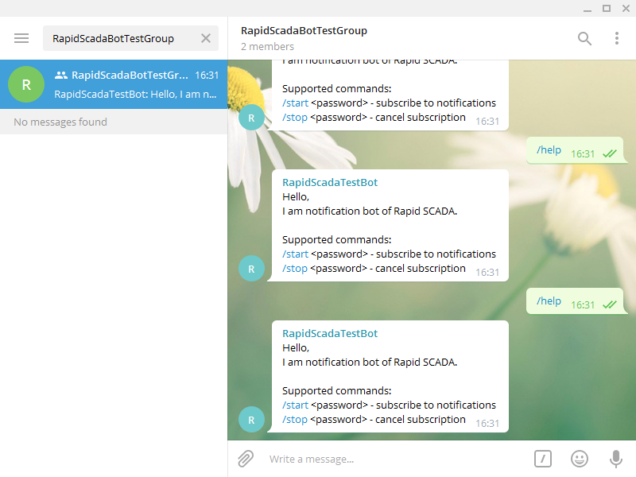

Telegram Driver
Overview
Telegram Driver is designed to send notifications using the popular Telegram messenger. The advantages of using Telegram is quickness of receiving notifications, no fee for the service and easy notification group management.
Installation
Telegram Driver is installed in accordance with the general sequence of installing Communicator drivers. The driver library file is KpTelegram.dll.
Configuring
Creating Telegram Bot
First you need to create a Telegram bot. To do this:
- Install the application and register Telegram.
- Add the bot named BotFather to the contact list.

- In the dialog with BotFather, run the command /newbot and follow the instructions from BotFather.
- Click the menu icon and create a new group to receive notifications.

- Add the bot you created to the new group.
- Add contacts to the new group. These contacts will receive notifications.
Driver Settings
Configure notifications in the following sequence:
- Using the Administrator application, open the Device types table and check that the device type "224 Telegram" exists. If the specified record is missing, enter it manually.
- Using Administrator, create a separate communication line and a single device of the Telegram type that belongs to this communication line.
- Import the created communication line and the device to Communicator. Enable sending commands for the communication line.
- Using Communicator, open the device properties, enter the bot token obtained when creating the bot, and generate a bot password that is needed to manage subscriptions.

- Go to the Registration page and register the driver using the hyperlinks on the form.

- Save the driver configuration.
- Restart the Communicator service by clicking
 .
.
Manage Subscriptions
If the settings are correct, your bot will respond to commands, for example, the /help command.

To add or remove subscriptions to the group, use the /start and /stop commands with the previously generated password. However, by default, subscription changes are blocked. To unlock it, send a standard command number 2 with a value of 1 by Communicator. Now you can add or remove subscriptions.
Sending Messages
To send a message from Rapid SCADA to a Telegram group, you need send a binary command number 1 containing the group name (or identifier) and the message text. For example: RapidScadaBotTestGroup; Test message.

Automatic sending of notifications in case of specific conditions and events are performed by Automatic Control Module.